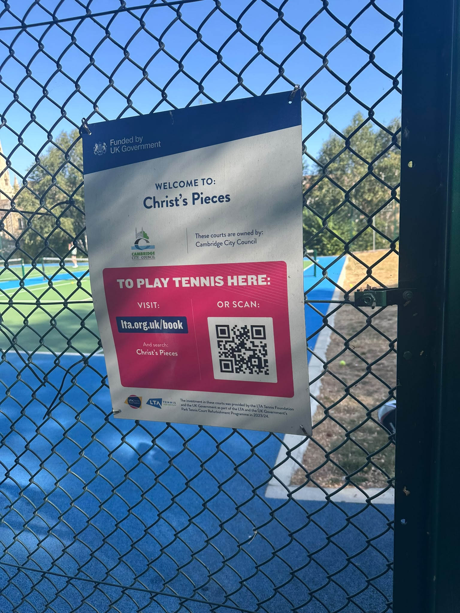
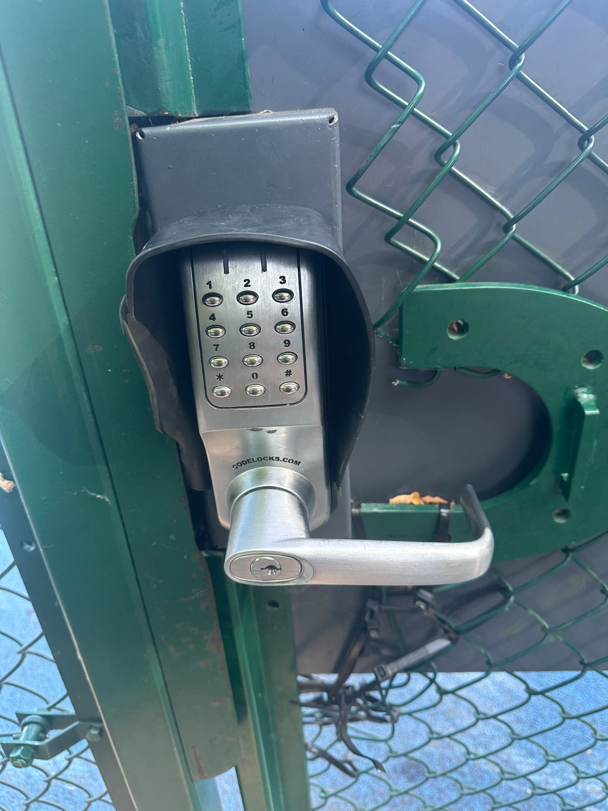

City council + ClubSpark lock
How to enter the courts 🔐
Christ's Pieces is owned by Cambridge City Council. Book at lta.org.uk/book — search Christ's Pieces — or scan the QR on the fence. Then unlock the Codelocks keypad with * and your Play Tennis PIN.
Photos and notes from the group how-to-enter pack. github.com/…/howtoenter
lta.org.uk/book — search Christ's Pieces 📧 Receipt & PIN Checklist Book
1. Follow the sign on the gate
The council poster says: visit lta.org.uk/book and search Christ's Pieces, or scan the QR. Courts are Cambridge City Council; LTA Park Tennis Court Refurbishment funded the surface.


2. Use the electronic lock
Silver Codelocks keypad on the green mesh gate, under a rain hood. Numbers 0–9, * and #, plus a lever handle. This is LTA SmartAccess / ClubSpark — not a padlock.
3. Unlock
- Open Play Tennis and copy the PIN for this booking (not published here).
- Press a key if the pad is dark (wake it).
- Type * first, then the PIN, no space — shape only: *XXXXXX.
- Turn the handle and push the gate. Let it latch behind you.
- The PIN works about 10–15 minutes before start until shortly after the end. Outside that window it will refuse.
4. Exit
You do not need a code to leave. The inside handle opens the gate. It locks when it closes. Do not prop it for strangers.
If it will not open
- Confirm date, court, and that you are inside the booking window.
- Star first. Wrong PIN three times can lock the pad for a minute.
- If you booked on the spot, wait a few minutes for the code to go live.